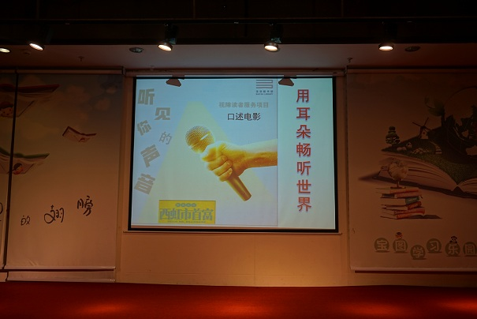

5月19日下午两点，宝安图书馆青少服务部在宝图负一楼开展了视障服务项目——口述电影《西虹市首富》。
对很多人来说，电影是表演、视觉、听觉的综合，用眼睛去观看那精彩纷呈的画面，用耳朵聆听恰到好处的配乐，如临其境，一场电影下来直呼“妙哉”。那对视障人士来说，电影是一个怎样的存在？他们如何才能“观看”精彩纷呈的电影？在这样的背景下，口述电影应运而生。
口述电影，用边放电影边解说的方式，让视障人群通过讲解弥补视觉障碍带来的信息缺失，获得了独特的听电影体验，听懂、读懂和看懂电影。
本次的视障服务项目，我们邀请到了心聆感影团队，来为视障人士口述电影《西虹市首富》。在口述过程中，心聆感影团队的老师在电影对白之间，描述一些情节内容及视觉场景，例如动作、肢体语言、脸部表情、场景等，把“看见”的“说”出来，帮助视障人士了解故事情节，享受看电影的乐趣。
“观”影结束后， 观众积极分享自己的心得体会，视障朋友们也在“听电影”中加深了对声音与视觉关系的认识，也在电影的内容中感悟到“珍惜当下的生活，就是最大的幸福”，学会在“金钱”和“人性”之间做正确的选择。
